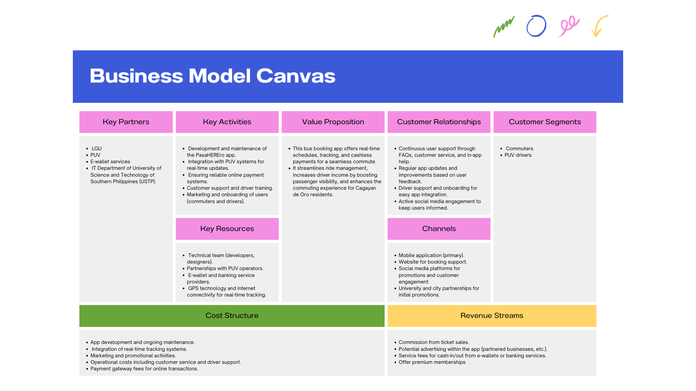

Riding Smart: How PasaHEREro Transforms Daily Commutes in CDO
By: Charlene R. Lusterio
Date: 10/24/24
Understanding PasaHEREro’s Business Model
The PasaHEREro app aims to transform commuting in Cagayan de Oro by offering a seamless bus booking experience. Its business model is crafted around a structured approach, emphasizing strategic partnerships, robust activities, customer relationships, and efficient revenue streams. Let’s delve into the core elements that make up PasaHEREro’s business model.
Key Partners
PasaHEREro thrives through strong collaborations. The app's primary partners include local government units (LGUs), public utility vehicles (PUVs), e-wallet service providers, and the IT Department of the University of Science and Technology of Southern Philippines (USTP). These partnerships play a crucial role in app development, integration with transport systems, and the provision of secure payment solutions. The LGUs and PUVs help ensure the app aligns with regulations and transportation networks, while the IT team at USTP focuses on continuous technical support and innovation.
Key Activities
The app’s core activities focus on maintaining and developing a user-friendly, real-time transportation platform. The PasaHEREro team works tirelessly to integrate the app with PUV systems, enabling commuters to access real-time schedules and updates. Additionally, the app prioritizes reliable online payment systems to facilitate cashless transactions. To build trust among users, PasaHEREro offers robust customer support and driver training, while marketing efforts target onboarding commuters and drivers. By handling everything from technical maintenance to user engagement, PasaHEREro aims to provide an all-in-one solution for urban commuting.
Value Proposition
PasaHEREro stands out by offering real-time schedules, GPS tracking, and cashless payments, making it a convenient option for daily commuters. The app not only simplifies ride management but also increases visibility for PUV drivers, leading to higher income opportunities. For residents of Cagayan de Oro, the app offers a streamlined, stress-free commuting experience, eliminating the traditional hassles of waiting for transportation. By leveraging technology, PasaHEREro enhances both passenger satisfaction and driver efficiency.
Customer Relationships
Maintaining strong relationships with users is vital for PasaHEREro’s growth. The app offers continuous user support through in-app FAQs, dedicated customer service, and regular updates based on user feedback. Additionally, the onboarding process for drivers is designed to be smooth, ensuring quick integration with the app. The team also maintains active engagement on social media, keeping users informed about updates, promotions, and other relevant information. This approach helps in building trust, ensuring customer retention, and fostering a sense of community among users.
Customer Segments
PasaHEREro serves two primary customer segments: commuters and PUV drivers. The app caters to the daily needs of commuters by offering reliable schedules, real-time tracking, and cashless transactions. Simultaneously, it supports PUV drivers by providing a platform to increase passenger visibility, helping drivers maximize their income and reduce idle time.
Key Resources
The success of PasaHEREro relies on several key resources, including a skilled technical team consisting of developers and designers, partnerships with PUV operators, and collaborations with e-wallet and banking service providers. Additionally, GPS technology and stable internet connectivity are essential to ensure real-time tracking and a smooth user experience. These resources collectively support the app’s operations and growth.
Channels
PasaHEREro reaches its users primarily through its mobile application, which serves as the main channel for booking and commuting support. The website offers additional support, including booking management and troubleshooting. The app’s visibility is further amplified through social media promotions and strategic partnerships with local universities and the city government, helping to drive initial user adoption and engagement.
Cost Structure
The cost structure for PasaHEREro includes app development, ongoing maintenance, integration of real-time tracking systems, marketing and promotional efforts, and operational costs such as customer service and driver support. There are also fees associated with the payment gateway for processing online transactions. By keeping operational costs streamlined, PasaHEREro can maintain a sustainable and scalable business model.
Revenue Streams
PasaHEREro generates revenue primarily through commission on ticket sales. Additional potential revenue streams include advertising within the app, where partnered businesses can promote their services to commuters. There’s also an opportunity to charge service fees for cash-in or cash-out transactions linked to e-wallets and banks. Furthermore, the app could offer premium memberships to enhance its revenue model by providing users with exclusive features or services.
Conclusion
The PasaHEREro app is more than just a bus booking tool; it’s a transformative solution for the commuting challenges in Cagayan de Oro. By focusing on real-time tracking, cashless payments, and strong partnerships, PasaHEREro aims to redefine public transportation. The app’s comprehensive business model ensures it not only serves commuters but also creates opportunities for PUV drivers, making it a win-win solution for everyone involved.